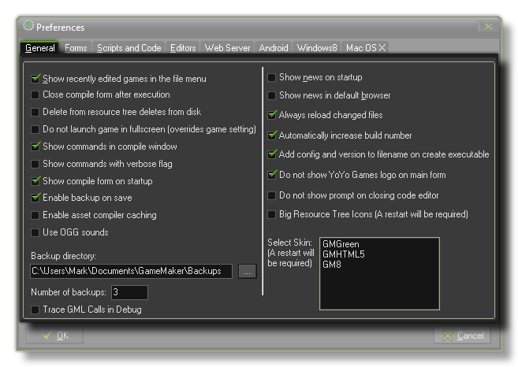

General Preferences
The section details the general preferences tab.

The General Preferences tab deals with the visual aspect of GameMaker:Studio as well as certain general behaviours. The following options are available :
- Show recently edited games in the file menu : If checked the eight most recently edited games are shown under the recent files in the file menu.
- Close compile form when complete : When you run your game, it is compiled by GameMaker:Studio to run on the target platform, and this process is shown in the compile window. Normally this window is always open (and can be docked at the bottom of the main window), but you may wish to only see it when only when compiling, in which case you should tick this option as it will automatically close the compile window when finished.
- Delete from resource tree deletes from disk : If this option is checked, when you remove a resource from the resource tree, it will also be removed from the computer. Use with caution! This may lead to the accidental loss of resources.
- Do not launch game in fullscreen : When checked, this option will override any other fullscreen functions when you launch your game and force it to start windowed. This is provided as a debug tool.
- Show commands in compile window : When you create a new final app or are testing the current one (normally or in debug mode) the compile window will show the currently running commands. Un checking this flag will switch off most of them and prevent the compile form from showing what is being done. The default (and recommended) value is to have this switched on.
- Show commands with verbose flag : This check-box is used to switch on (or off) verbose messages in the compile window. When switched on, the default command messages that are shown in the compile window (when the above "Show commands in compile window" is checked too) will contain far more information about the current status of the app being compiled. This may slow down the app as it runs and is flagged as off by default.
- Show compile form on startup : Flagging this will open the compile form automatically when you start GameMaker:Studio. If it is not flagged, then the compile form will only appear when you first test your game or when you create the final executable.
- Enable backup on save : This option can be used to switch on the automatic backups that GameMaker:Studio can make of your project. When this is enabled, you can select a Backup Directory to save a full backup copy of the current project too, as well as the Number of backups that you wish to keep. Once this is enabled, every time you save the current project you will also have a backup copy saved to the chosen directory. These backups are numbered concurrently, starting at 0. Please note that the current (newest) backup is always the first! Each time you save, previous backups are re-numbered with an increment of one (removing those that are numbered larger than the specified number of backups) and the latest save is numbered as 0.
- Trace GML Calls in Debug : This will enable the compile window to show GML calls. Note that this will greatly slow down the game execution!
- Use OGG Sounds : Switching this option on will force GameMaker:Studio to use built in OGG Vorbis support for all sounds. While this may be beneficial in many cases, it is worth noting that OGG has a CPU overhead as each sound file has to be decoded before it can be played.
- Show news on startup : Sets whether to show the GameMaker:Studio news when you start the program.
- Show news in default browser : Sets whether to display the GameMaker:Studio news in your default Internet browser, rather than in the program itself.
- Always reload changed files : This option is to permit GamreMaker:Studio to reload files that are changed on the disc automatically. If this is flagged, then any images, sounds or scripts that are changed from the project *.gmx file itself will be silently re-loaded into your game. if it is not flagged, you will get a message prompt asking you if you wish to change the files.
- Automatically increase build number : When checked the build number will increase automatically.
- Add config and version to filename on create executable : Flagging this will generate a build number (including config name, if configs are used) automatically when you create an executable of your game.
- Do not show YoYo Games Logo in the main window : When checked the image and link to the YoYo Games website in the main window are not shown.
- Do not show prompt on closing code editor : Flagging this option will prevent the code or script editor asking you if you wish to save any changes and instead will silently save on close always. The default (and recommended) setting for this is to have it switched off.
- Big resource tree icons : Checking this will make all the resource tree icons larger (GameMaker:Studio must be restarted for this to show).
- Select Skin : Check to use a different skin for the GameMaker:Studio GUI (GameMaker:Studio must be restarted for this to show). It should be noted that custom skins must placed in the Local app data folder (%localappdata%) otherwise they may be over-written or removed when GameMaker:Studio updates.
Back : Preferences
Next : Form Preferences